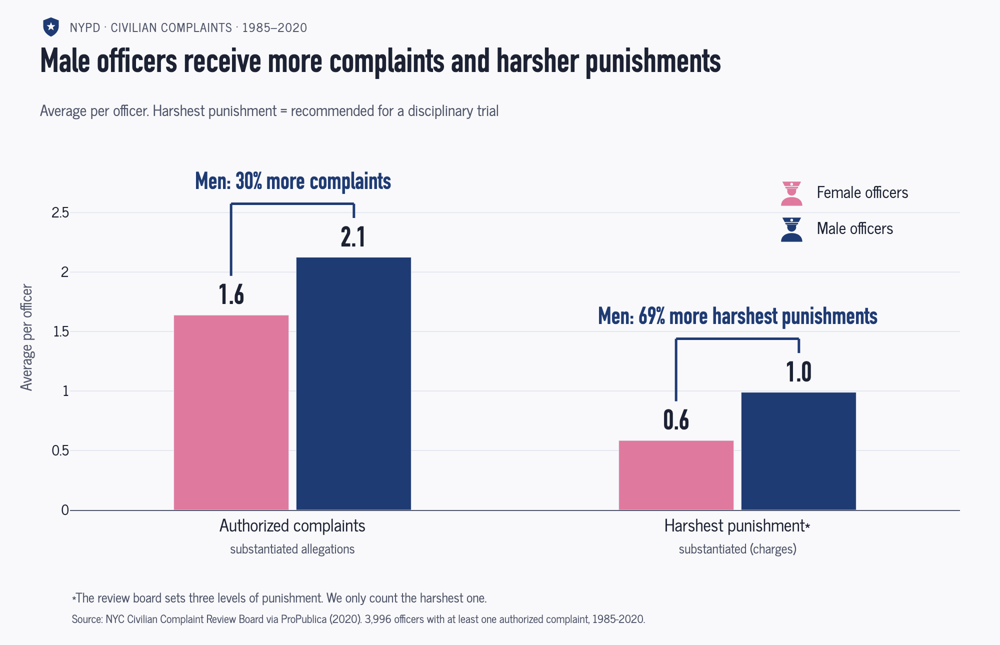
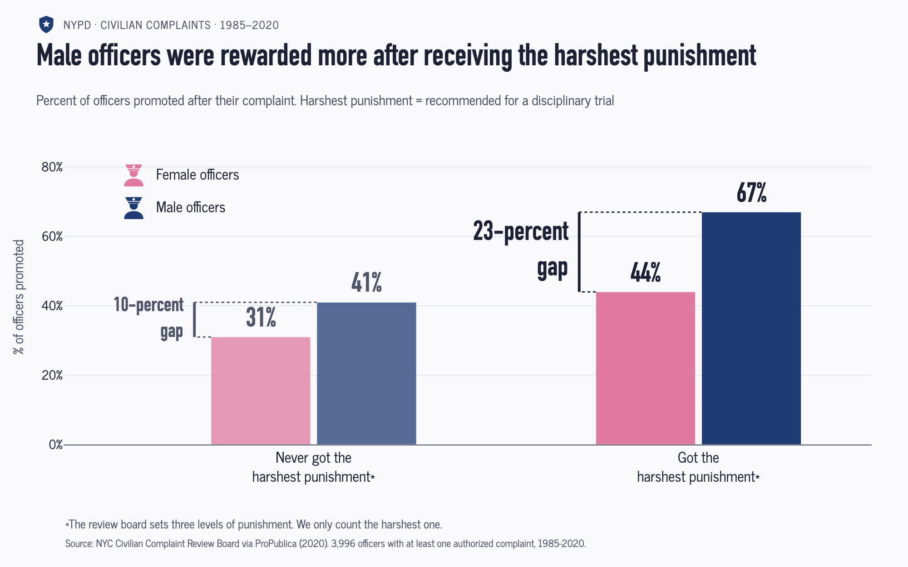

Proposition: Male officers face more consequences for misconduct than female officers
Data. Both charts use the NYC Civilian Complaint Review Board (CCRB) records that ProPublica released in July 2020: 33,358 allegations against 3,996 NYPD officers (3,609 men and 387 women), filed between 1985 and 2020. ProPublica included only officers who were still on the force in June 2020 and who had at least one substantiated allegation. On the charts, an authorized complaint is a substantiated allegation, meaning the board found that the officer broke NYPD rules. The harshest punishment is the board's recommendation that the officer face a disciplinary trial ("Substantiated (Charges)"). The board only recommends discipline; the police commissioner makes the final decision.
FOR the Proposition

Data transformations. We grouped the 33,358 allegations by officer to count each officer's authorized complaints and harshest punishments, then averaged those counts by gender. The callouts divide men's average by women's.
Design Decisions and Rationale:
- -1.5 Counting per officer instead of per complaint. Men collect more punishments partly because they have about twice as many allegations each (8.8 vs. 4.5). Dividing by allegations would show that a smaller share of men's complaints are authorized (24% vs. 36%), which is the opposite story. An earnest version would add allegations per officer as a third pair of bars, which would explain much of the gap. Every number here is true, and the missing denominator does the persuading.
- -1 "Harsher punishments" in the title. The chart shows that men receive more of the harshest punishment, not that their punishments are harsher. "Harsher" suggests severity, which we never measured. An earnest title would be "Male officers receive more complaints and more of the harshest punishments." We kept "harsher" because it sounds more decisive.
- -0.5 Relative callouts with brackets. "Men: 30% more complaints" and "69% more harshest punishments" are accurate ratios, but the absolute gaps are only 0.5 and 0.4 per officer. In our first draft the callouts floated above the men's bars. We added brackets joining each pair so it's clear the comparison is between women and men, and the callout reads as the size of the gap. Putting women on the left also makes the eye step up to the taller men's bar.
- +1 Plain-language labels with the dataset's terms underneath. "Authorized complaints" and "Harshest punishment" are easier to read than the legal terms, which we show in small gray text below each label so careful readers can check them. The trade-off is that "authorized" and "harshest" sound stronger than "substantiated" and "charges," so the plain words also push the message a little.
- +1.5 Zero baseline, source line and footnote. The y-axis starts at zero, so bar heights are proportional. The source line names the dataset and the "at least one authorized complaint" filter, and a footnote explains that we only count the top of the board's three punishment levels. These choices keep the chart checkable. They also make the framing above more believable, which is part of why it persuades.
AGAINST the Proposition

Data transformations. The dataset doesn't record promotions, so we inferred them. We ranked the eight NYPD ranks into seven levels, treating Sergeant and Detective as equal. An allegation counts as followed by a promotion if the officer's rank in 2020 is above their rank at the time. We then flagged each officer as ever promoted and as ever recommended for the harshest punishment. Finally, we computed the promotion rate for each of the four gender and punishment groups.
Design Decisions and Rationale:
- -1 "Rewarded" in the title. The title frames promotion as a reward for misconduct. The data only shows that harsh punishment and promotion go together. Officers with longer careers collect both more complaints and more promotions, so tenure likely explains much of the pattern. An earlier title, "The promotion gap between men and women is widest after the harshest punishment," was more accurate but less striking.
- -0.5 Gap brackets instead of a ratio. Our first draft said men were promoted "50% more often" after the harshest punishment (67% vs. 44%). We replaced that ratio with brackets labeled "10-percent gap" and "23-percent gap," so readers compare the two gaps directly. That is more honest than the ratio. However, the labels say "percent" when they are percentage points, and the 23 comes from rounded values (the exact gap is 22.1). We also tried a dumbbell chart that drew each gap as a line. We went back to grouped bars, which also show each group's promotion rate as a bar height.
- +0.5 Fading the "never got it" pair. The left pair is drawn at 75% opacity, so the eye lands on the "got it" pair while the comparison stays readable. We first drew it at 57.5% and darkened it so it wouldn't fade into the background. Keeping it visible lets readers see the gap grow, rather than seeing only the headline pair.
- -1 Not showing who is missing. The data only includes officers still on the force in June 2020. Officers who were fired or pushed out after serious discipline are missing, which raises the promotion rate of the punished group. We also don't know when or why anyone was promoted. None of this appears on the chart, which presents inferred promotion as if it were a recorded outcome.
- +1 Zero baseline, definition and footnote. The y-axis starts at zero, the subtitle defines the harshest punishment as a recommendation for a disciplinary trial, and the same footnote as Figure 1 explains the three punishment levels. A reader who reads the small print can see what is being measured. Most readers won't, and the title does the persuading.
Final Reflection
What surprised us most was that both sides came from the same honest data, with every axis starting at zero. The choice of denominator did most of the work. Counting punishments per officer makes men look more punished, because they have about twice as many allegations. Dividing by allegations, or looking at what happened to officers afterward, makes men look like they get away with more. The data side was straightforward once we built one row per officer. The hard part was wording. We revised the titles and labels more than the charts themselves, going back and forth on "more" versus "harsher," "received" versus "recommended for," and "percent" versus "percentage points." Each of those words changed the message. We also had to be careful with women's numbers, since only 387 of the 3,996 officers are women.
We define ethical analysis and visualization as work where a careful reader can recover the truth from what is shown and disclosed. Every number should be accurate, and every encoding should be proportional to the data. Choices about which measure to show and who is included should be visible on the chart, not hidden in the code. The more general the audience, the higher the bar, because fewer readers will check the small print.
We think persuasion is acceptable when it picks which true measure to emphasize, labels that measure clearly, and keeps the scales honest. Titles that state a conclusion and color or opacity that directs attention fall in this category. Design becomes misleading when it leads readers to believe something the data doesn't support. That includes words that imply cause, like "rewarded," or severity, like "harsher." It also includes calling percentage points "percent," and hiding a denominator the conclusion depends on. Our official-looking police styling falls close to the line too, because the charts did not come from the NYPD. We drew our own line at distorting the data itself. We kept every axis at zero, dropped an early draft with an axis zoomed to 30–50%, and dropped an icon array whose rounding inflated a gap. Looking back, some of the framing we allowed, such as "rewarded," crosses that line, because it asserts a cause the data cannot show.